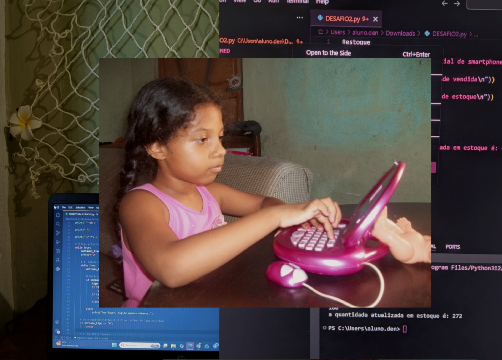

Sobre Mim
Com uma trajetória que evoluiu rapidamente de Jovem Aprendiz a Auxiliar Administrativa, desenvolvi uma base sólida em gestão de processos, fluxo financeiro e atendimento.
A minha vivência diária com sistemas operacionais despertou o desejo de ir além: deixar de ser apenas utilizadora para passar a criar as próprias soluções digitais. Atualmente, frequento o Técnico em Desenvolvimento de Sistemas no SENAI Dendezeiros, onde combino a minha organização e visão de processos corporativos com a paixão pela tecnologia.
Objetivos
Procuro oportunidades na área de tecnologia (estágio ou posição júnior) para aplicar e expandir os meus conhecimentos em desenvolvimento de software. O meu objetivo é unir a minha bagagem administrativa à vertente técnica para criar aplicações eficientes que resolvam problemas reais.
Vamos conversar ou construir algo juntos?
Ir para contato